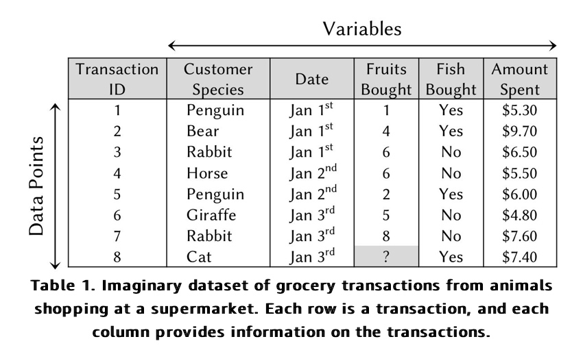

The tabular form is most commonly used to represent data for analysis . Each row indicates a data point representing a single observation, and each column shows a dimension describing the data point.
Dimensions are also known as variables, attributes or features.
Variable Types
There are four main types of dimensions, and it is important to distinguish between them to ensure that they are appropriate for our selected algorithms.
Binary. This is the simplest type of variable, with only two possible options. In Table 1, a binary variable is used to indicate if customers bought fish.
Categorical. When there are more than two options, the information can be represented via a categorical variable. In Table 1, a categorical variable is used to describe the customers’ species. Integer. These are used when the information can be represented as a whole number. In Table 1, an integer variable is used to indicate the number of fruits purchased by each customer.
Continuous. This is the most detailed variable, representing numbers with decimal places. In Table 1, a continuous variable is used to indicate the amount spent by each customer.
